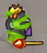
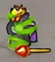
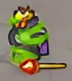

На лёгкой сложности: 5333
На средней сложности: 6666
На сложной сложности: 7999
Урон
666-999
Броня
Нет
Скорость
Медленная
Отнимает жизней
20
Галлерея

Везнан — главный антагонист, третий и последний босс в основной
кампании Kingdom Rush.
Это босс, имеющий две разные формы:
обычная, а после её убийства везнан превращается во вторую форму -
демона, которая может застать игрока врасплох.
обе формы имеют одинаковые характеристики.
Фразы:
Хорошо, что ты добрался так далеко!
Будешь отлично смотреться в моей колекции черепов!
Ммм! Не думаю, что это сработает!
Посмотрим, но что ты способен!
Ты даже не вызов...
Я — воплощение тьмы и огня!
Я — твои кошмары, воплотившиеся в реальность!
Не будет рассвета... для людишек.
Сдавайся, и твоя смерть будет быстрой.
Я даже не вспотел!
Оставь всякую надежду!
Я не боюсь темноты, темнота боится МЕНЯ.
Хорошо! Я чувствую твою ярость!
Хаха! Кому ты позвонишь?
В темноте нет жизни. Только смерть.
Здесь будет жарко как в печи, а ты будешь тортик.
Страх – убийца разума.
Встречайте Вазнана!
Да, мы пройдем!
Я буду наслаждаться каждой минутой
Почему ты такой серьезный?
Встреть свою судьбу!
Интересные факты:
В конце игры, во время финала, посох Вез'нана подбирает Лорд Малагар.
В режимах «Героическое испытание» и «Железное испытание» вы заметите, что, поскольку Везнан мертв, в Темной Башне висит табличка «ПРОДАЕТСЯ».
В уровне Pandaemonium душа Везнана находится в клетке рядом с троном Молоха. В ранних версиях игры Везнан был замечен с посохом в руках, хотя в титрах говорилось, что его украл Лорд Малагар. Дальнейшие обновления изменились: Везнан сжимает прутья клетки, но посоха не видно. В «Героическое испытание» и «Железное испытание» после того, как Молох убит, клетка разрушается, а Везнан исчезает. Он снова готов завоевать Линирею во второй раз в Kingdom Rush: Vengeance.
Атака Везнана «Похищение души» используется только во Flash версии игры.
Здоровье демонической формы Везнана не зависит от сложности во Flash и iOS версиях игры: у него всегда 6666 единиц здоровья (в других вериях у неё такое же количество здоровья, как и у обычной формы, то есть зависит от сложности)


 
